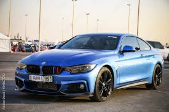
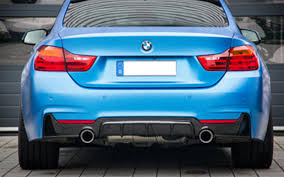
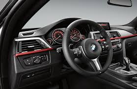

BMW F32
The sixth-generation 4 Series (2013 - 2020)



Car Specifications
- Engine Options: 2.0L Inline-4, 3.0L Inline-6
- Power: 181 - 425 hp
- Torque: 270 - 550 Nm
- Transmission: 6-speed manual, 8-speed automatic
- Top Speed: 250 km/h (155 mph)
- 0-100 km/h: 4.1 seconds (M4)
- Fuel Economy: 6.5 - 9.0 L/100 km (36 - 26 mpg)
- Production Years: 2013 - 2020
- Body Style: 2-door Coupe, 2-door Convertible, 4-door Gran Coupe
- Drive Type: Rear-Wheel Drive, All-Wheel Drive (xDrive models)
- Weight: 1,400 - 1,800 kg
About the BMW F32
The BMW F32 series was the first 4 Series model introduced, succeeding the 3 Series coupe. It brought a sharper design, more advanced technology, and a stronger focus on driving dynamics.
The F32 featured a sleeker roofline, wider stance, and a driver-focused interior, making it a perfect choice for enthusiasts looking for a balance of performance and luxury.
Image Gallery


Key Features
- Performance: High-performance M4 variant with exceptional handling.
- Design: A stylish coupe design with a focus on aerodynamics.
- Technology: iDrive infotainment, digital instrument cluster, and advanced safety features.
Technical Information
The BMW F32 series features advanced engineering and high-performance engines:
Engine Codes and Iterations
- N20: 2.0L Inline-4, turbocharged, used in 420i, 428i.
- N55: 3.0L Inline-6, turbocharged, used in 435i, 440i.
- S55: 3.0L Inline-6, twin-turbo, used in the M4, up to 425 hp.
Conclusion
The BMW F32 series set a new standard for coupe design and performance. With its dynamic driving experience, luxurious interior, and advanced technology, it remains a favorite among BMW enthusiasts worldwide.